Sewer line cleaning
Clears the pipe that carries everything from the house out to the street sewer. It is the job when several drains slow down together or the basement floor drain backs up.
Ask about this serviceSewer lines, drains, main line backups and camera inspection of lines for Brooklyn homes, from Bath Beach through Bensonhurst, Bay Ridge and Gravesend.
4.1Stars on
A Brooklyn two-family, cut open from the roof down to the street sewer. Tap a numbered spot to see what usually clogs there and which service clears it.
Grease, food scraps and coffee grounds that cool and stick inside the trap under the sink and the short branch line behind it.
One slow sink is usually a branch clog, not the main line.
Lint, hair, mud and debris that settle in a drain that rarely sees water. It is also the lowest opening in the house, so it is where a backup shows first.
If water shows here while other fixtures also run slow, think main line.
Roots, grease and flushed wipes that build up in the line past this capped pipe. The cleanout is a straight way into the line, so it is often where a technician starts.
The cap is there on purpose: leave it for the plumber to open.
The U-shaped section many older New York buildings have where the house drain meets the street connection. Sediment and debris settle in the low point of the bend.
A camera can show what is sitting in the bend before anything else is done.
Everything from the house travels this pipe toward the street sewer. When it clogs, several fixtures slow down or back up at the same time.
Several fixtures acting up together? Stop using water and call a plumber.
Five spots · tap any number
Each one in plain English: what it is, and when you need it.
Clears the pipe that carries everything from the house out to the street sewer. It is the job when several drains slow down together or the basement floor drain backs up.
Ask about this serviceClears one slow or blocked fixture: a kitchen sink that drains slowly, a bath that holds water, a floor drain that gurgles. Kitchen, bath and floor drains.
Ask about this service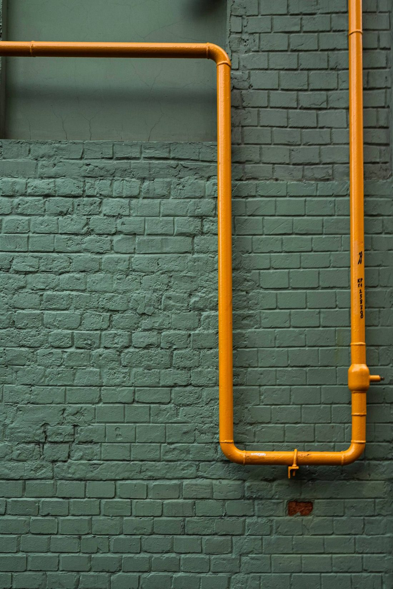
When water comes back up a drain instead of going down, the main line is the usual suspect. This is the service for a backup that affects the whole house.
Ask about this service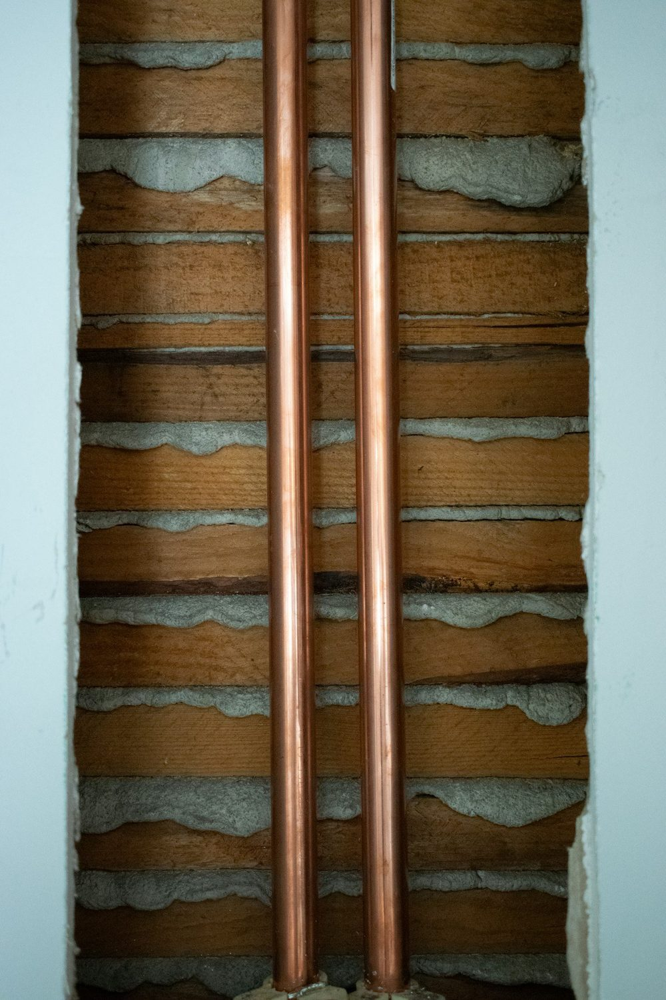
A small camera on a cable looks inside the pipe so you can see what is wrong before deciding what to do. Useful when the same clog keeps coming back.
Ask about this serviceBefore you call, a minute of looking can tell you which one you have. Check the three, then try the picker.
Two or three of these? Stop using water and call a plumber.
Pick one.
Tap the one that sounds like your house.
A slow or blocked drain at one fixture usually means the clog is in that fixture’s own trap or the short pipe behind it. A plunger is a fair first step. If it keeps coming back, it is worth a call.
Drain cleaningWhen several fixtures slow down together, gurgle, or show water at the basement floor drain, the clog is probably past the branches, in the main sewer line. Stop using water and call a plumber.
Main line backupsBrick, pipe and the city on top. Illustrative stock photos: tap any to look closer.
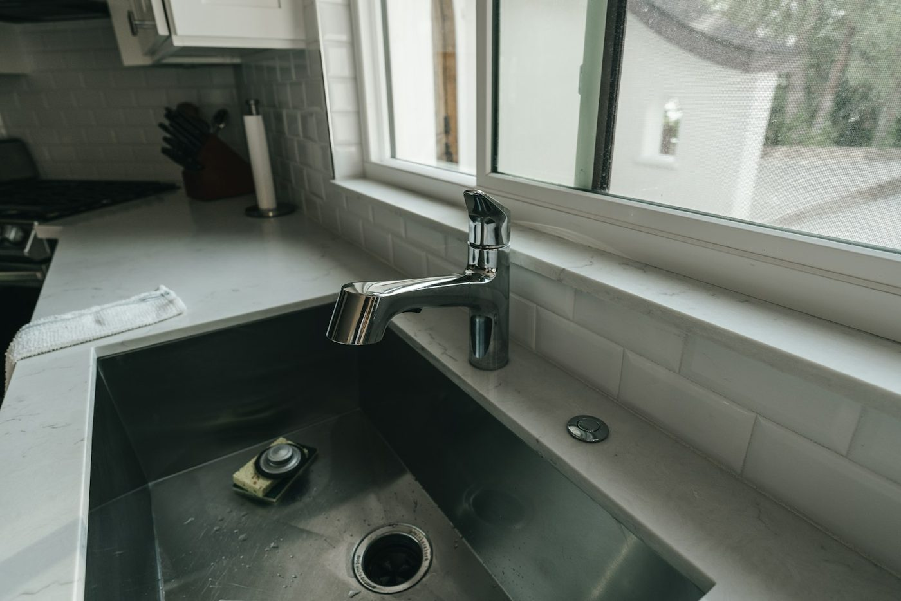
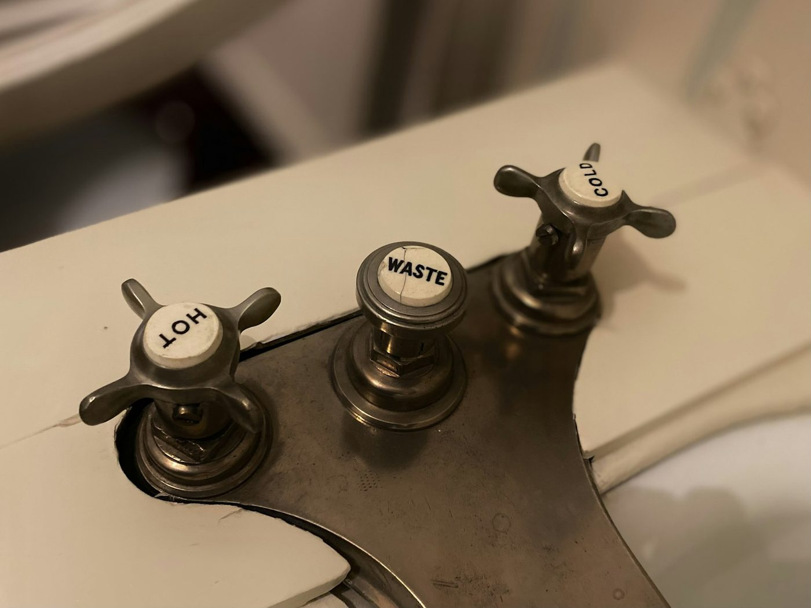
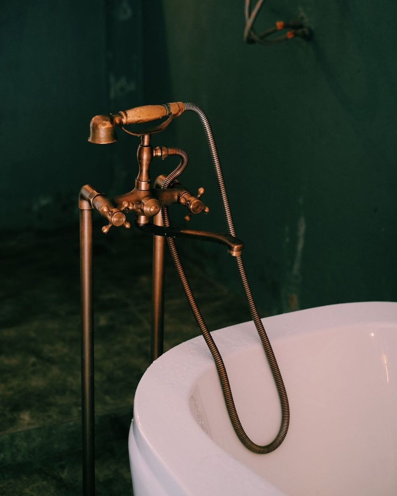

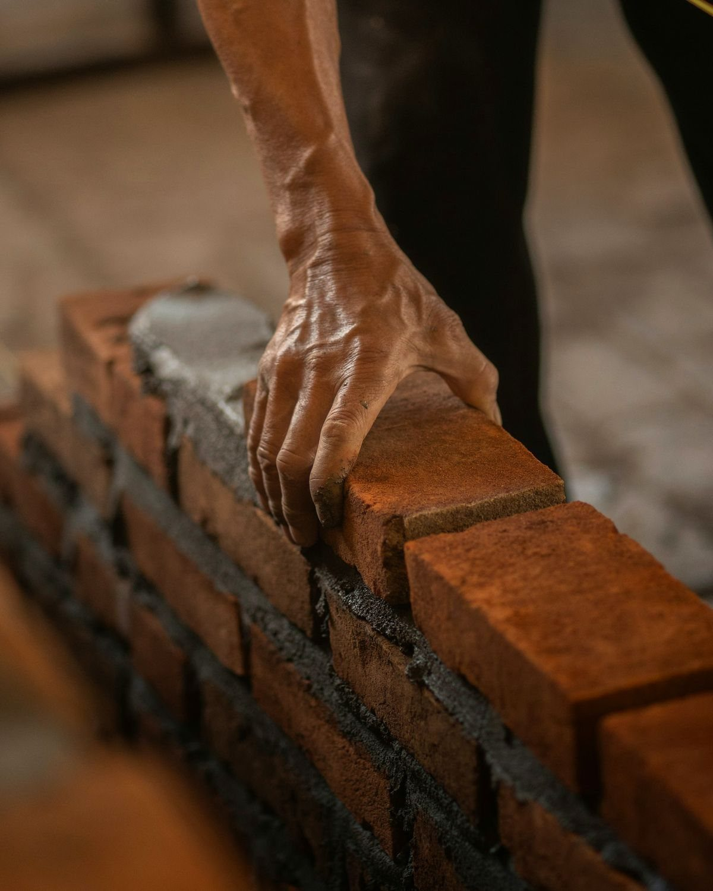
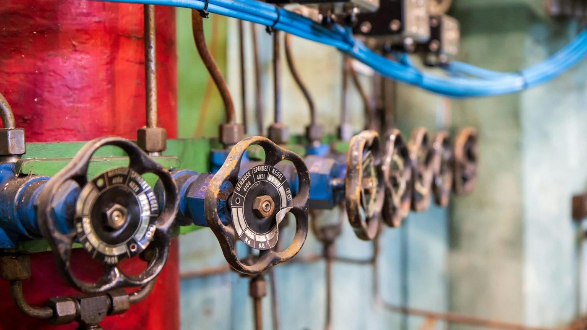
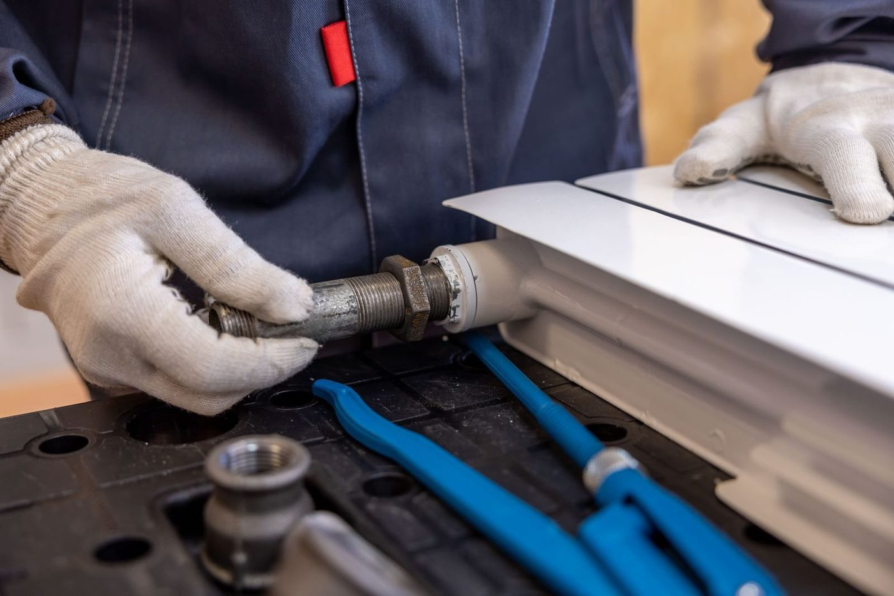
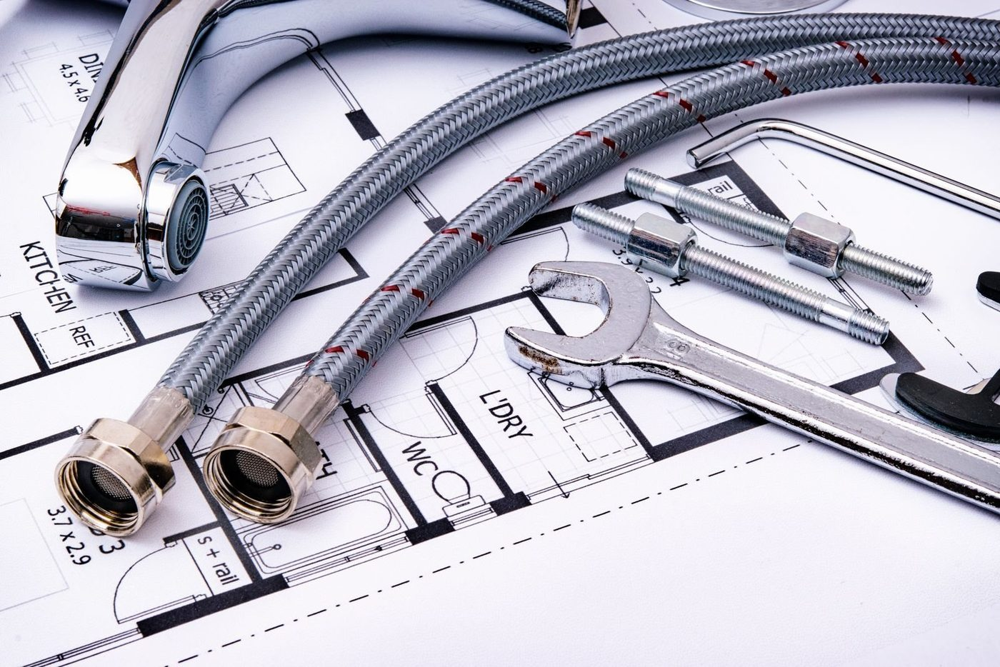

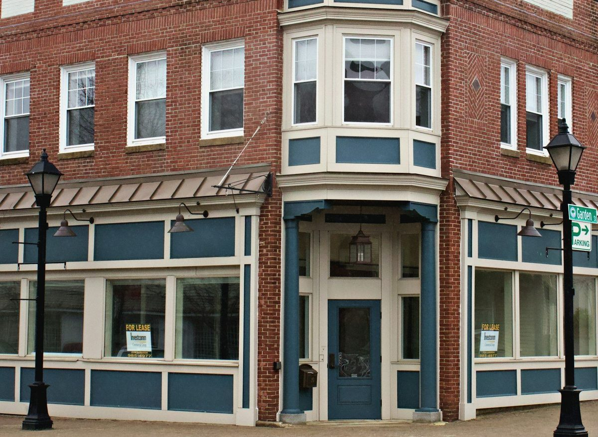
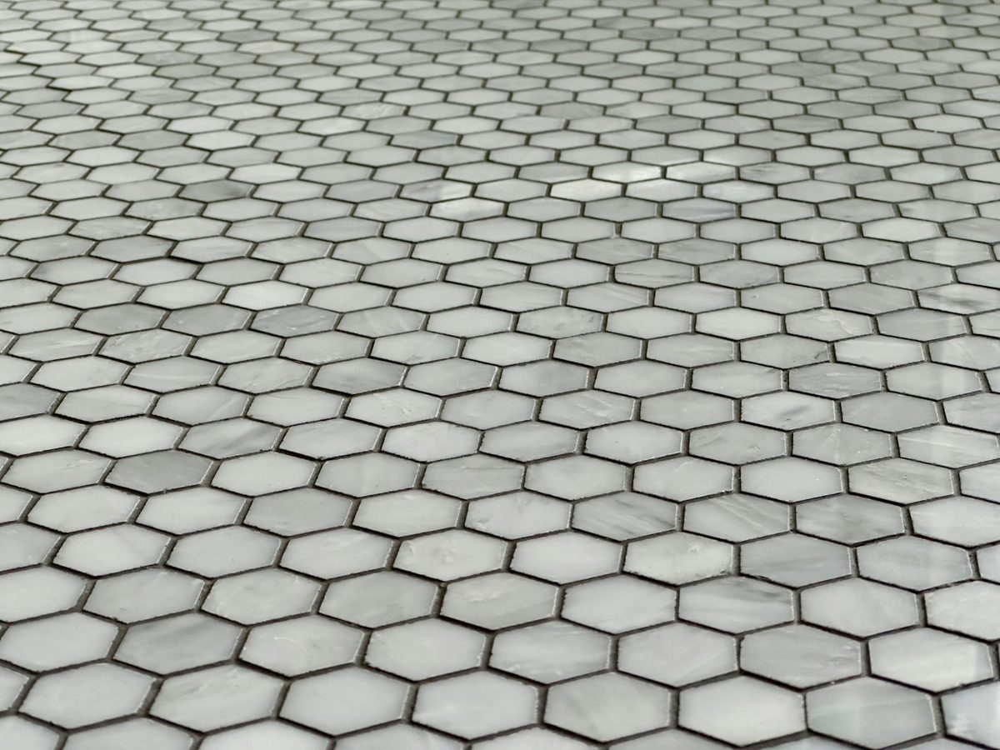

Tell us what the drain is doing. Name, phone and email, and a line or two about it.
🎁 BLACK FRIDAY SPECIAL — ONLY 7 BUSINESSES
We've already created your personalised website preview. Now let's get it live.
Custom Website Build: $997 FREE
With our $149/month Managed Website Plan.
Everything is included:
Review your website preview without paying anything.
If you approve it, your first three months ($447) are payable before launch.
After the initial three months, your plan continues at $149/month, with monthly cancellation available.
Your domain and business content always remain yours. Deliverable website files become yours after 12 paid months, or earlier through a declining buyout.
Offer ends November 30, 2026, or when the advertised promotional places are filled.